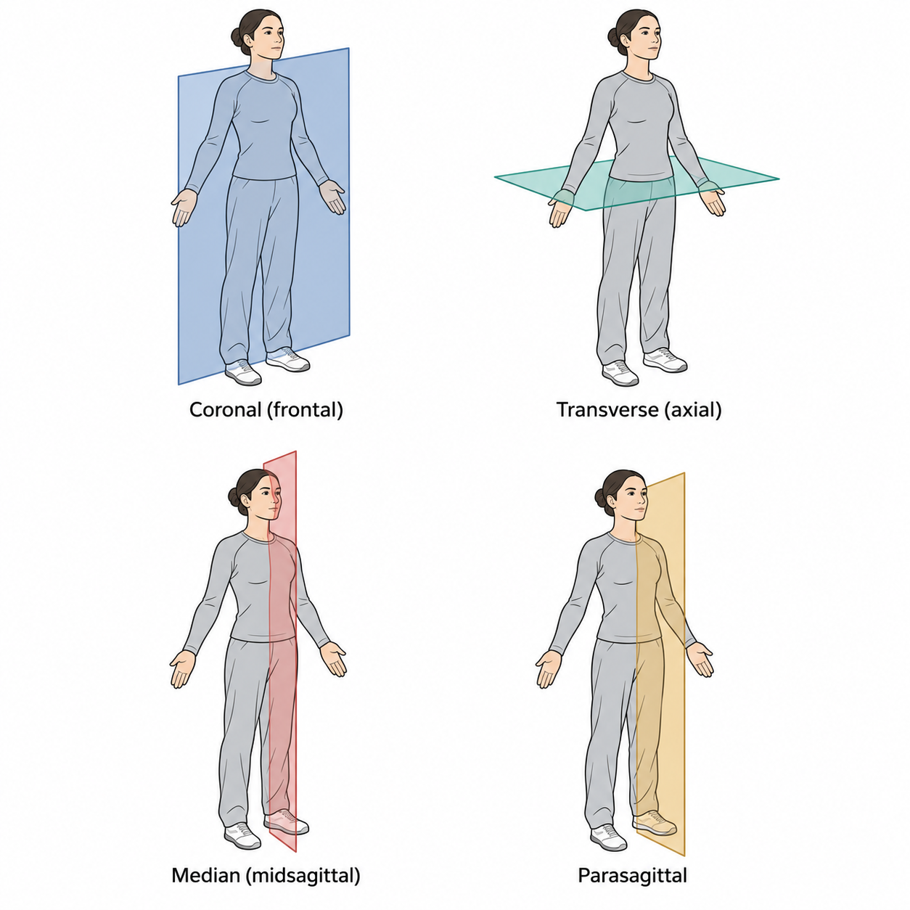
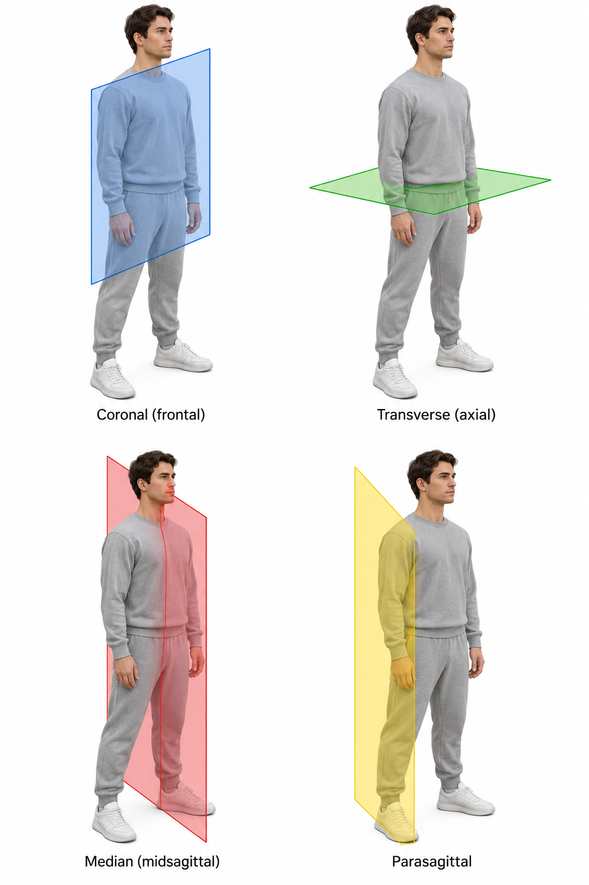

Anatomical Terminology
What is anatomy?
Anatomy is the study of the structure of the body.
The word anatomy comes from the Greek anatomē, meaning dissection or cutting up. It combines ana- (“up”) with a root from temnein (“to cut”). Dissection gave the subject its name.
Anatomy forms the basis of clinical practice
Anatomy helps clinicians locate a finding, identify the structures that may be involved, and explain the effect of an injury.
The same knowledge guides physical examination and procedures. A clinician uses a surface landmark to locate an underlying structure and considers what lies deeper before making an incision.
Anatomical position
In the anatomical position, the person stands upright with the head and eyes facing forward, the upper limbs at the sides, the palms facing forward, and the feet pointing forward. The thumbs lie lateral to the little fingers.
This position provides a common reference even when the person is lying down or moving. Right and left refer to the person being described.
- Supine means lying face up. It comes from Latin supinus, meaning “lying on the back.”
- Prone means lying face down. It comes from Latin pronus, meaning “inclined forward.”
Terms of relationship
A directional term usually compares one structure with another. For example, the second toe is lateral to the great toe, and the great toe is medial to the second toe.
Terms | Meaning | Word origin and example |
Anterior / Posterior | Towards the front / back | Latin ante means “before” and post means “after” or “behind.” The sternum is anterior to the heart. |
Superior / Inferior | Towards the head / feet | Latin superior means “higher” and inferior means “lower.” The heart is superior to the diaphragm. |
Medial / Lateral | Towards / away from the median plane | Latin medius means “middle” and latus means “side.” The great toe is medial to the little toe. |
Proximal / Distal | Nearer to / farther from the point of attachment or origin | Latin proximus means “nearest” and distare means “to stand apart.” The wrist is distal to the elbow. |
Superficial / Deep | Nearer to / farther from the body surface | Superficial comes from Latin superficies, meaning “surface.” In a section of the arm, the humerus lies deep to the skin. |
An inferior structure can carry fluid in a superior direction. The inferior vena cava lies below the heart and carries blood upwards towards the right atrium. Its name describes its position relative to the superior vena cava.
Planes and sections
A plane is an imaginary flat surface passing through the body. A section is the view obtained by cutting or imaging along a plane.
Plane | What it separates | Word origin |
Median or midsagittal | Right and left halves at the midline | Latin medianus means “in the middle.” |
Sagittal | Right and left portions. A sagittal plane away from the midline produces unequal portions. | Latin sagitta means “arrow.” The term is shared with the sagittal suture of the skull. |
Coronal or frontal | Anterior and posterior portions | Latin corona means “crown.” |
Transverse or axial | Superior and inferior portions | Latin transversus means “lying across.” |
Oblique | Portions separated by a plane angled to the principal planes | Latin obliquus means “slanting.” |
In the thoracic illustration from the deck, the yellow plane runs across the chest at the level of the sternal angle. It is a transverse plane
Named surfaces
The palmar surface is the palm side of the hand. The plantar surface is the sole of the foot. The opposite surface of each is its dorsum. These names come from Latin palma (“palm”), planta (“sole”), and dorsum (“back”).
 
Figure: Planes of human body
Term s of movement
Movement | Meaning and example | Word origin |
Flexion / Extension | Bending / straightening at a joint. Bending the elbow brings the forearm towards the arm. | Latin flectere means “to bend” and extendere means “to stretch out.” |
Abduction / Adduction | Moving a limb away from / towards the median plane. Raising the arm sideways is abduction. Bringing it back to the side is adduction. | Latin abducere means “to lead away” and adducere means “to lead towards.” |
Medial / Lateral rotation | Turning a limb about its long axis so its anterior surface turns towards / away from the midline. | Latin rota means “wheel.” |
Circumduction | Moving the distal end of a limb in a circle by combining flexion, abduction, extension and adduction. | Latin circum means “around” and ducere means “to lead.” |
Pronation / Supination | Rotating the forearm. With the elbow bent at a right angle and held at the side, pronation turns the palm down and supination turns it up. | From Latin pronus and supinus, the roots of prone and supine. |
Digits have their own reference axes.
- The fingers abduct away from the middle finger and adduct towards it.
- The toes use the second toe as their reference.
- The thumb moves in a different orientation from the fingers. Moving it away from the plane of the palm is thumb abduction. Bringing its pad to meet a fingertip is opposition, from Latin opponere, meaning “to place against.”